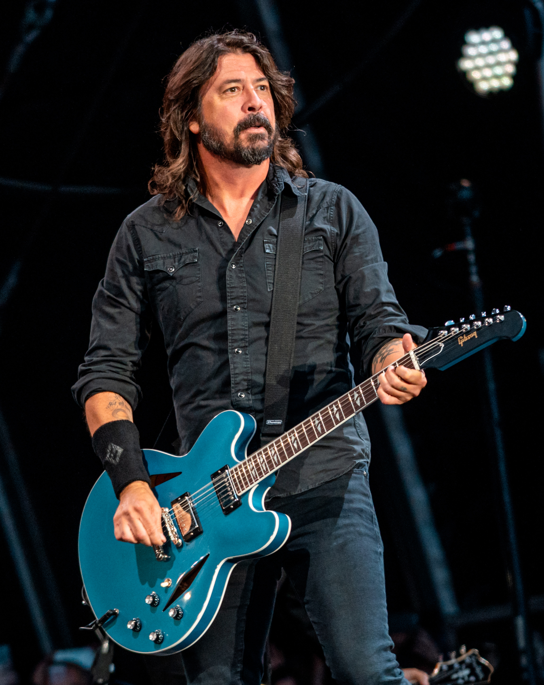
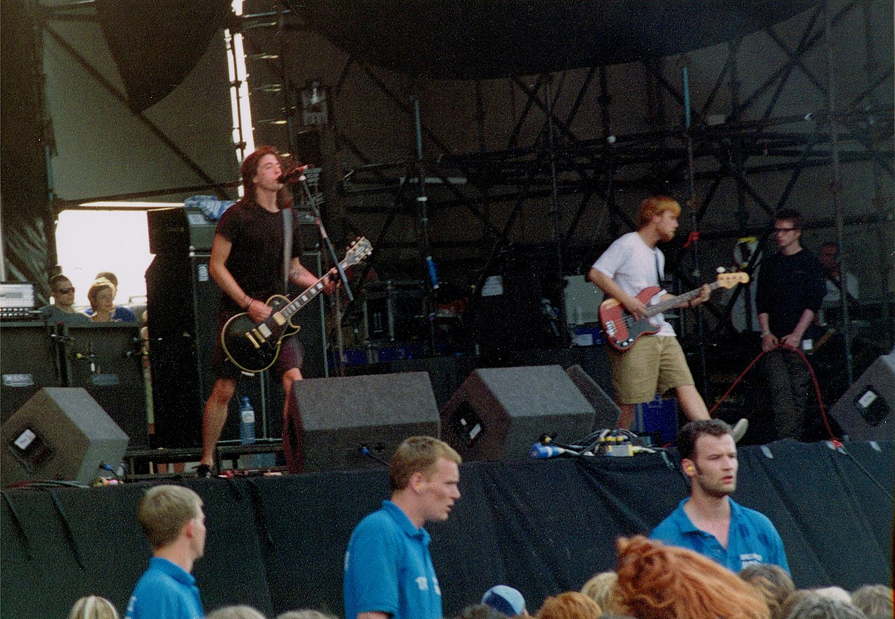
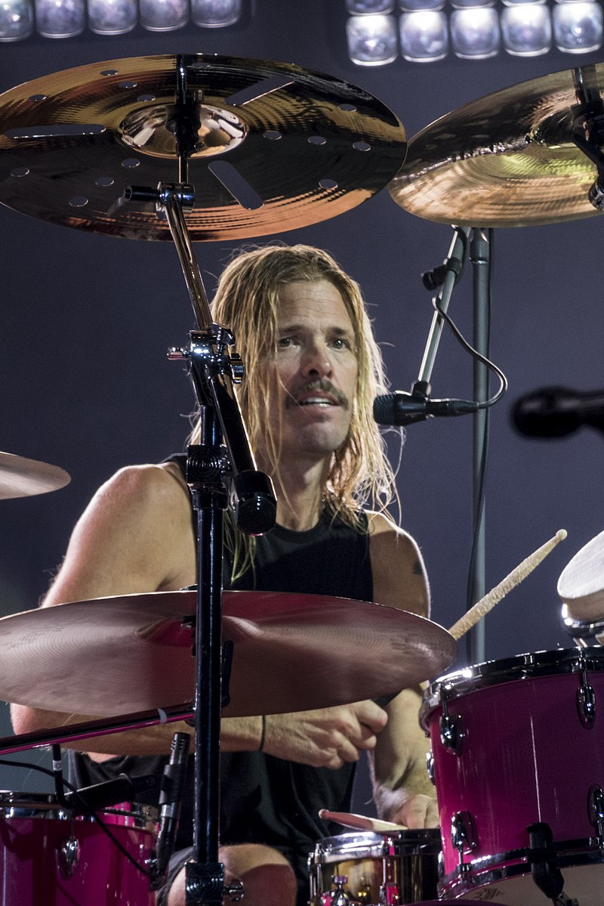
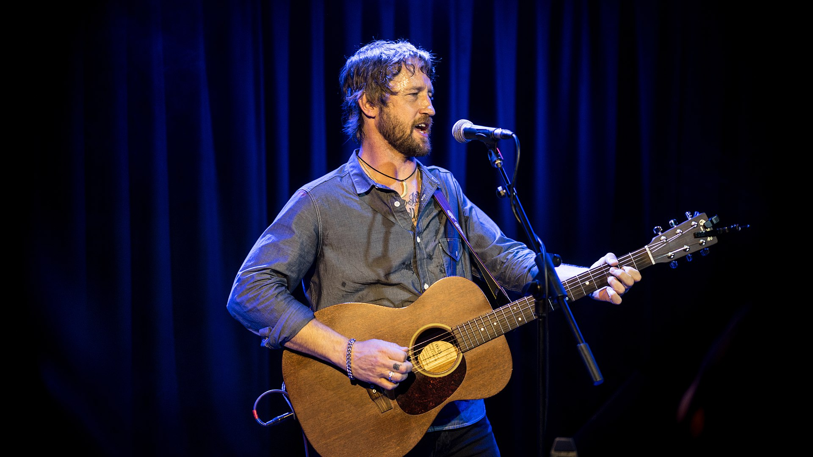
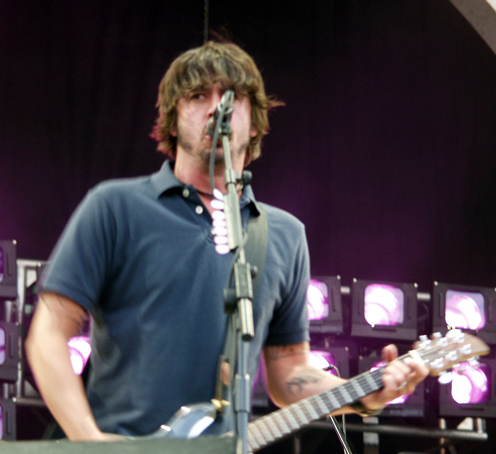

History
Background and first demos (1990–1994)

In 1990, Dave Grohl joined the grunge band Nirvana as drummer. During tours, he took a guitar with him and wrote songs, but was too intimidated to share them with the band; he was "in awe" of the songs written by frontman Kurt Cobain.[5] Grohl occasionally booked studio time to record demos and covers, issuing an album of demos, Pocketwatch, under the pseudonym Late! in 1992.[6]
Nirvana disbanded after the death of Cobain in 1994. Grohl received offers to work with various artists; press rumors indicated he might join Pearl Jam,[7] and he almost accepted a position as drummer in Tom Petty and the Heartbreakers. Grohl later said: "I was supposed to just join another band and be a drummer the rest of my life. I thought that I would rather do what no one expected me to do." Grohl instead entered Robert Lang Studios in October 1994 to record 15 of his own songs.[6] With the exception of a guitar part on "X-Static", played by Greg Dulli of the Afghan Whigs, Grohl played every instrument and sang every vocal.[8] He completed an album's worth of material in five days and handed out cassette copies of the sessions to his friends for feedback.[6]
Grohl hoped to stay anonymous and release the recordings in a limited run under the name Foo Fighters, taken from foo fighter, a World War II term for unidentified flying objects.[6] He hoped the name would lead listeners to assume the music was made by several people. He said later: "Had I actually considered this to be a career, I probably would have called it something else, because it's the stupidest fucking band name in the world."[9] The demo tape circulated in the industry, creating interest among record labels.[10][11]
Formation and debut album (1994–1995)
Grohl formed a band to support the album. He spoke to Nirvana bassist Krist Novoselic about joining the group, but they decided against it; Grohl said it would have felt "really natural" for them to work together, but would have been "weird" for the others and placed more pressure on Grohl.[12] Instead, Grohl recruited bassist Nate Mendel and drummer William Goldsmith, both of the recently disbanded Seattle group Sunny Day Real Estate. Nirvana touring guitarist Pat Smear joined as second guitarist.[13] Grohl licensed the album to Capitol Records, releasing it on his new label, Roswell Records.[6]
Foo Fighters made their live public debut on February 23, 1995, at the Jambalaya Club in Arcata, California, followed by performances at Satyricon in Portland on March 3 and the Velvet Elvis in Seattle on March 4. The show on March 3 had been part of a benefit gig for the investigation of the rape and murder of Gits singer Mia Zapata. Grohl refused to do interviews or tour large venues to promote the album.[13] Foo Fighters undertook their first major tour in the spring of 1995, opening for Mike Watt. The band's first single, "This Is a Call", was released in June 1995,[8] and its debut album Foo Fighters was released the next month. "I'll Stick Around", "For All the Cows", and "Big Me" were released as subsequent singles. The band spent the following months on tour, including their first appearance at the Reading Festival in England in August.[13]
The Colour and the Shape (1996–1997)

After touring through the spring of 1996, Foo Fighters entered Bear Creek Studio in Woodinville, Washington, with producer Gil Norton to record its second album. While Grohl once again wrote all the songs, the rest of the band collaborated on the arrangements. With the sessions nearly complete, Grohl took the rough mixes to Los Angeles, intending to finish his vocal and guitar parts. While there, Grohl realized that he was not happy with the drumming and replaced most of Goldsmith's drum tracks with his own.[14] Though Grohl hoped that Goldsmith would still play on the tour, Goldsmith felt betrayed and left the band.[15]
In need of a replacement for Goldsmith, Grohl contacted Alanis Morissette's touring drummer Taylor Hawkins for a recommendation.  Grohl was surprised when Hawkins volunteered himself.[5] Hawkins made his debut with the group in time for the release of its second album, The Colour and the Shape, in May 1997. The album included the singles "Monkey Wrench", "Everlong", "My Hero", and "Walking After You".[citation needed]
Smear left Foo Fighters in 1997, citing exhaustion and burnout, and was replaced by Grohl's former Scream bandmate Franz Stahl.[16] Stahl toured with Foo Fighters for the next few months and appeared on two tracks recorded for movie soundtracks, a re-recording of "Walking After You" for The X-Files and A320 for Godzilla. A B-side from the "My Hero" single, "Dear Lover", appeared in the horror film Scream 2. The tour for The Colour and the Shape album in 1998 included performances at Glastonbury Festival (on the main stage) and the Reading Festival.[17]
There Is Nothing Left to Lose (1998–2001)
In 1998, Foo Fighters traveled to Grohl's home state of Virginia to write their third album. However, Grohl and Stahl were unable to co-operate as songwriters; Grohl
told Kerrang! in 1999, "in those few weeks it just seemed like the three of us were moving in one direction and Franz wasn't." Grohl was distraught over the decision to fire Stahl as the two had been friends since childhood. Shortly after that, Mendel called Grohl to say he was quitting to reunite with Sunny Day Real Estate, only to reverse his decision the next day.[18] The remaining trio of Grohl, Mendel, and Hawkins spent several months recording the band's third album, There Is Nothing Left to Lose,
in Grohl's home studio. The album spawned several singles, including "Learn to Fly", the band's first to reach the US Billboard Hot 100. Other singles included
"Stacked Actors", "Generator", "Next Year", and "Breakout".[citation needed]
Before the release of the album, Capitol Records president Gary Gersh was forced out of the label. Given Grohl's history with Gersh, Foo Fighters' contract had included a "key man clause" that allowed them to leave the label upon Gersh's departure. They left Capitol and signed with RCA, who later acquired the rights to the band's Capitol albums.[18]
After recording There Is Nothing Left to Lose was completed, the band auditioned a number of potential guitarists and settled on Chris Shiflett, who performed with Me First and the Gimme Gimmes and California punk band No Use for a Name. Shiflett initially joined as a touring guitarist but achieved full-time status prior to the recording of the group's fourth album.[19]
In January 2000, Nate Mendel led a benefit concert in Hollywood for AIDS denialist group Alive & Well AIDS Alternatives with a speech by founder Christine Maggiore and free copies of her self-published book, What If Everything You Thought You Knew About AIDS Was Wrong?[20][21] Additionally, the band's official website featured a section devoted to Alive & Well.[22] Sandra Thurman, then director of the Office of National AIDS Policy stated this was "extraordinarily irresponsible behavior" because "[t]here is no doubt about the link between HIV and AIDS in the respected scientific community."[23] Links and references to Alive & Well were removed from the band's website by March 2003.[24]
Around 2001, Foo Fighters established a relationship with rock band Queen as the band (particularly Grohl[25] and Hawkins[26]) were fans. In March of that year, Grohl and Hawkins inducted them into the Rock and Roll Hall of Fame[27] and joined them to perform the 1976 classic, Tie Your Mother Down, with Hawkins playing drums alongside Roger Taylor.[28] Guitarist Brian May added a guitar track to Foo Fighters' second cover of Pink Floyd's "Have a Cigar", which appeared on the soundtrack to the movie Mission: Impossible 2. In 2002, guitarist May contributed guitar work to Tired of You and an outtake called Knucklehead. The bands have performed together on several occasions since, including VH1 Rock Honors and Foo Fighters' headlining concert in Hyde Park.
One by One (2001–2004)
Near the end of 2001, the band reconvened to record its fourth album. After spending four months in a Los Angeles studio, the album "just didn't sound right" and the band had no confidence it would sell very well. With the album not reaching their expectations amid much infighting, Grohl spent some time helping Queens of the Stone Age complete their 2002 album Songs for the Deaf. Once that album was finished and touring had started for both Foo Fighters and Queens of the Stone Age, the band was on the verge of breaking up entirely. Grohl reunited with Hawkins, Shiflett, and Mendel to play the Coachella Festival, alternating days with Queens of the Stone Age. Hawkins and Grohl talked about resuming work on One by One and after a very satisfying performance the following day, they agreed to stay together. The group re-recorded nearly all of the album (save Tired of You) in a ten-day stretch at Grohl's home studio in Alexandria, Virginia, the following month.[19] The original version of One by One, referred to by the band as Million Dollar Demos, has never been released in its entirety although seven tracks were leaked online in 2012 and 2015.
The album was released in October 2002 under the title One by One. Singles from the album included "All My Life", "Times Like These", "Low", and "Have It All". The tour for the album included a headline performance at the 2002 Reading and Leeds Festivals.
For most of its history, the band chose to stay away from the political realm. However, in 2004, upon learning that George W. Bush's presidential campaign was using "Times Like These" at rallies, Grohl decided to lend his public support to John Kerry's campaign – "There's no way of stopping the president playing your songs, so I went out and played it for John Kerry's people instead, where I thought the message would kinda make more sense".[30] Grohl attended several Kerry rallies and occasionally performed solo acoustic sets. The entire band joined Grohl for a performance in Arizona coinciding with one of the presidential debates.
In Your Honor (2005–2006)
 Having spent a year and a half touring behind One by One, Grohl did not want to rush into recording another Foo Fighters record. Initially Grohl intended to write acoustic material by himself but eventually the project involved the entire band.[32] To record its fifth album, the band shifted to Los Angeles and built a recording studio, dubbed Studio 606 West. Grohl insisted that the album be divided into two discs–one full of rock songs, the other featuring acoustic tracks.[33] In Your Honor was released in June 2005. The album's singles included Best of You, DOA, Resolve, and No Way Back/Cold Day in the Sun.
Having spent a year and a half touring behind One by One, Grohl did not want to rush into recording another Foo Fighters record. Initially Grohl intended to write acoustic material by himself but eventually the project involved the entire band.[32] To record its fifth album, the band shifted to Los Angeles and built a recording studio, dubbed Studio 606 West. Grohl insisted that the album be divided into two discs–one full of rock songs, the other featuring acoustic tracks.[33] In Your Honor was released in June 2005. The album's singles included Best of You, DOA, Resolve, and No Way Back/Cold Day in the Sun.
During September and October 2005, the band toured with Weezer on what was billed as the Foozer Tour.[34] Foo Fighters played a headline performance at the 2005 Reading and Leeds Festivals. On June 17, 2006, Foo Fighters performed their largest non-festival headlining concert to date at London's Hyde Park. Motörhead's Lemmy joined the band on stage to sing Shake Your Blood from Dave Grohl's Probot album. As a surprise performance, Brian May and Roger Taylor of Queen appeared to play part of We Will Rock You as a lead in to Tie Your Mother Down.
In further support of In Your Honor, the band organized a short acoustic tour for the summer of 2006. Members who had performed with them in late 2005 appeared, such as Pat Smear, Petra Haden on violin and backing vocals, Drew Hester on percussion, and Rami Jaffee of The Wallflowers on keyboard and piano. While much of the setlist focused on In Your Honor's acoustic half, the band also used the opportunity to play lesser-known songs, such as Ain't It The Life, Floaty, and See You. The band also performed Marigold, a Pocketwatch-era song that was best known as a Nirvana B side.
In November 2006, the band released their first ever live CD, Skin and Bones, featuring fifteen performances captured over a three-night stint in Los Angeles.